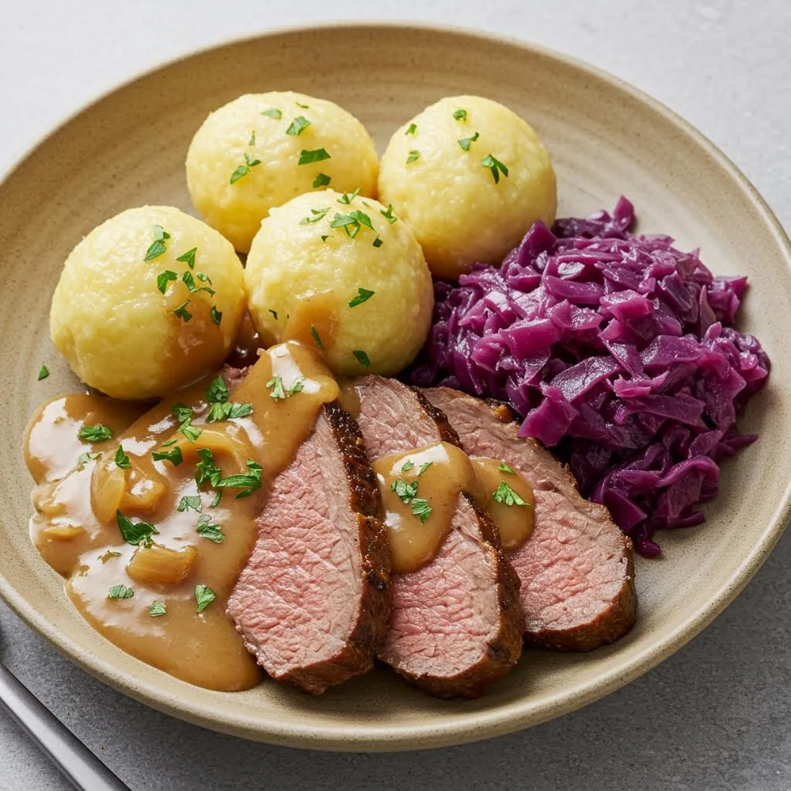

Main
Amerikaner |
Red Cabbage a la Oma |
Spaghetti Carbonara |
Waffels
Roast in Mustard-Cream Sauce

Description:
This recipie is my favorite recipie for roast. It is one of my most favorite meals served with potato dumplings and red cabbage
Ingredients (for 5 portions):
-
1 kg roast (beef or pork) or boneless skinless chicken breasts
-
2 Tbs. olive oil
-
2 Tbsp. Margarine
-
1 small apple,diced
-
1 small onion, diced
-
800 ml clear or chicken broth
-
150 ml heavy whipping cream
-
1 Tbsp. Lemon Juice
-
2 Tbsp. Mustard
-
salt and pepper
-
potentially gravy thickener or starch with water
Steps:
-
Rub roast with salt and pepper.
-
Brown from all sides in hot olive oil.The outside of the meat should be slighly crispy.
-
Brown cubed onion and apple in margarine.
-
Add mustard and lemon juice.
-
Cover with broth and simmer covered for 1.5 hours.
-
Before serving add heavy whipping cream and spice to taste with salt and pepper if necessary.
If the sauce is too thin, thicken with gravy thickener or starch with water until desired thickness.